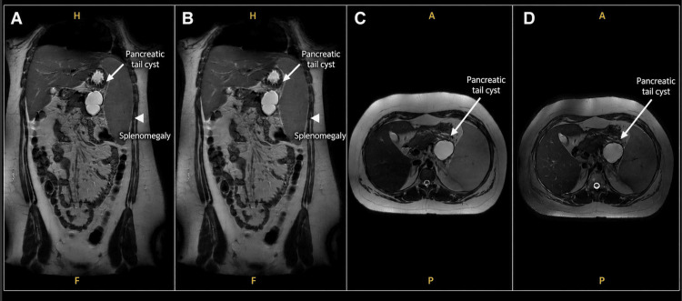

Ficha del catálogo
Neoplasias quísticas del páncreas
- Sistema
- Digestivo
- Modalidad
- RM
- Región
- Páncreas
- Dificultad
- Avanzado
Son lesiones quísticas del páncreas con comportamiento y riesgo muy variables, que se detectan cada vez con mayor frecuencia de forma incidental. Las principales son la neoplasia mucinosa papilar intraductal, el cistoadenoma seroso y la neoplasia quística mucinosa. Su manejo depende de la estirpe, del tamaño, de la comunicación con el conducto y de la presencia de signos de alarma.
Técnica
La resonancia con colangiorresonancia es la técnica más adecuada porque muestra el contenido, los septos y sobre todo la comunicación de la lesión con el conducto pancreático, dato que define a la neoplasia mucinosa intraductal. El ultrasonido endoscópico complementa la evaluación y permite obtener líquido para análisis bioquímico y citológico.
Qué observar
- Comunicación de la lesión con el conducto pancreático principal o con una rama lateral
- Calibre del conducto principal, cuya dilatación difusa orienta a la afectación del conducto principal
- Número, tamaño y disposición de los quistes, así como el grosor de las paredes y de los septos
- Nódulos murales que realzan tras el contraste, signo de alarma mayor
- Calcificación central en estrella y patrón microquístico en panal, propios del cistoadenoma seroso
- Signos de obstrucción biliar, atrofia distal, adenopatías y crecimiento en controles sucesivos
Hallazgos
La neoplasia mucinosa intraductal de rama lateral se ve como un agrupamiento de quistes en racimo de uvas que comunica con el conducto, más frecuente en la cabeza y en el proceso uncinado, y a menudo multifocal. La forma de conducto principal produce dilatación difusa o segmentaria del conducto con contenido mucinoso y papila prominente. El cistoadenoma seroso es una lesión microquística en panal, con septos finos y a veces cicatriz central calcificada, y prácticamente siempre benigna. La neoplasia quística mucinosa aparece como una lesión unilocular o con pocos tabiques, de pared gruesa, situada en el cuerpo o la cola, que no comunica con el conducto y que predomina de forma marcada en mujeres.
Perlas
La pregunta que ordena todo el razonamiento es si el quiste comunica o no con el conducto pancreático, porque de ahí se separan las lesiones intraductales del resto. A partir de ahí, lo que dispara la conducta invasiva son los signos de mayor riesgo, en particular el nódulo mural que realza, la dilatación importante del conducto principal y la ictericia obstructiva atribuible a la lesión. Un quiste pequeño, estable y sin signos de alarma en un paciente asintomático suele manejarse con vigilancia.
Diagnóstico diferencial
- Pseudoquiste pancreático
- Antecedente de pancreatitis, pared fibrosa sin epitelio ni nódulos y contenido con detritos.
- Tumor neuroendocrino quístico
- Componente sólido periférico con realce arterial intenso alrededor de la porción quística.
- Neoplasia sólida pseudopapilar
- Masa mixta con hemorragia y cápsula en mujer joven, con crecimiento lento y buen pronóstico.
- Adenocarcinoma con degeneración quística
- Componente sólido infiltrante con obstrucción ductal abrupta y contacto vascular.
- Quiste de retención simple
- Lesión pequeña y unilocular sin septos ni nódulos, estable en el tiempo.
Simuladores
- Asa duodenal o yeyunal llena de líquido adyacente al páncreas
- Divertículo duodenal periampular que simula una lesión quística de la cabeza
- Vasos peripancreáticos tortuosos vistos en un solo plano
Por modalidad
- RM
- Es el método de elección por su definición del contenido, de los septos y de la comunicación ductal, sin radiación
- US
- El ultrasonido endoscópico caracteriza los nódulos murales y permite aspirar líquido para análisis
- TC
- Muestra bien las calcificaciones y el contexto, pero es menos precisa para septos finos y para la comunicación ductal
Protocolo
Resonancia con secuencias T2 de alta resolución en cortes finos, colangiorresonancia en bloque grueso y en cortes finos, difusión y estudio dinámico tras gadolinio con fases arterial, portal y tardía. Conviene mantener el mismo protocolo en los controles para poder comparar tamaños y detectar cambios sutiles en el mismo plano.
Clasificación
En la evaluación de las neoplasias mucinosas se emplean dos grupos de criterios. Los estigmas de alto riesgo, que orientan a valoración quirúrgica, incluyen el nódulo mural con realce, la dilatación marcada del conducto pancreático principal y la ictericia obstructiva atribuible a la lesión de la cabeza. Las características preocupantes, que orientan a estudio con ultrasonido endoscópico, incluyen el quiste de gran tamaño, el engrosamiento o el realce de la pared, la dilatación moderada del conducto principal, el cambio brusco de calibre ductal con atrofia distal, las adenopatías, el crecimiento rápido y la pancreatitis atribuible al quiste. La decisión final integra estos hallazgos con la edad, la comorbilidad y la preferencia del paciente.
Errores frecuentes
- No valorar la comunicación con el conducto y confundir una lesión de rama lateral con una neoplasia mucinosa quística
- Confundir un pseudoquiste con una neoplasia quística al omitir el antecedente de pancreatitis
- Cambiar de protocolo entre controles y no poder comparar el tamaño de forma fiable

neoplasia quistica pancreatica neoplasia mucinosa intraductal cistoadenoma seroso nodulo mural colangiorresonancia vigilancia pancreas